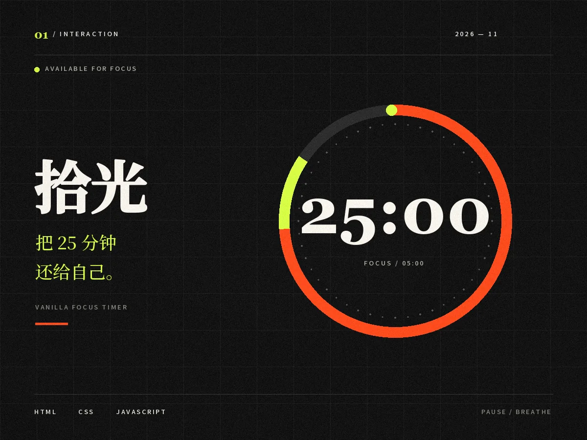
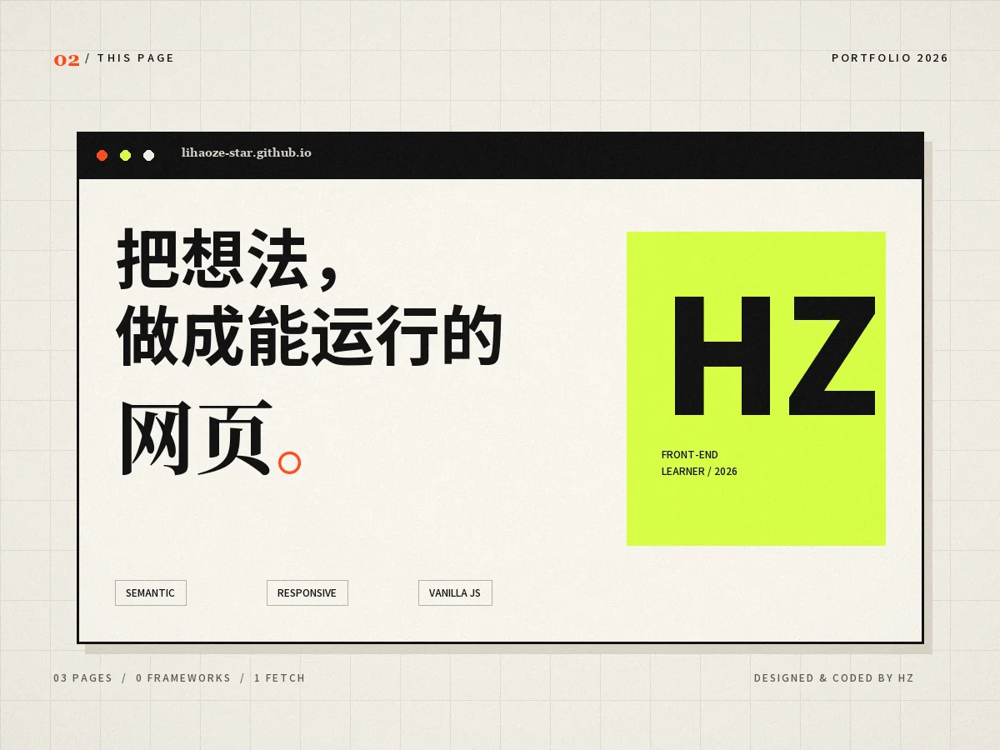
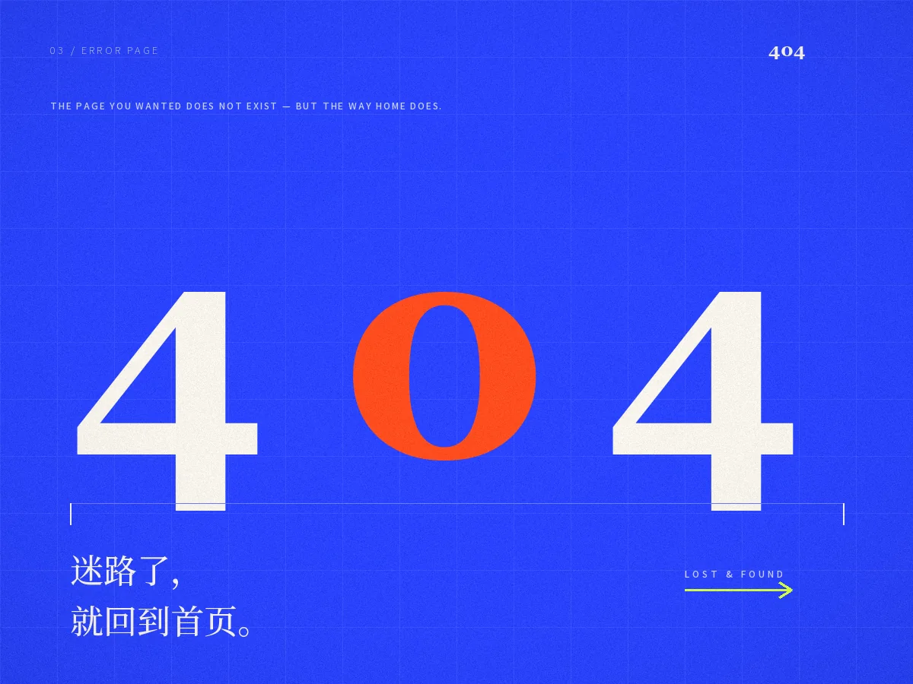

01 / SELECTED WORK
做过的东西，
比说过的话响。
第一阶段的三个练习：一个计时器、一个个人主页，还有一页专门用来走丢的 404。

01交互 / INTERACTION2026
拾光 SHIGUANG
一个不打扰的专注计时器。25 分钟倒数、开始与暂停，全部用原生 JavaScript 写成。
查看案例
02页面 / THIS PAGE2026
这一页 THIS PAGE
你正在看的这个页面。用语义化标签、CSS Grid 和一次 fetch，把内容稳稳地放在屏幕上。
阅读拆解
03页面 / 4042026
404 LOST & FOUND
一个不太令人沮丧的错误页。它也会认真响应 375px 的屏幕，并把你送回首页。
看看彩蛋筛选按钮由 JavaScript 驱动：不是 CSS :hover，也可以用键盘操作。
02 / ABOUT
先让页面站住，
再让它说话。
我是李昊泽，正在从前端基础开始，一格一格地搭自己的知识结构。这个站点是第一阶段的结业作业，也是我第一次把页面真正放到公网上。
我不急着堆框架。先把语义化、响应式、DOM 和一次完整的请求弄明白，再谈更远的东西。页面可以朴素，但不能打不开、不能错位、不能在控制台里冒红字。
看看我是怎么做的技能栈 / TOOLKIT
- 01
HTML5
语义化结构、表单、可访问性
- 02
CSS3
Grid、Flexbox、响应式布局
- 03
JavaScript
DOM、事件、fetch、调试
- 04
DevTools
Network、Console、元素审查
- 05
Git
版本管理、GitHub Pages 部署
- 06
Figma
设计稿阅读与还原
03页面 / PAGES
00框架 / FRAMEWORKS
01次 fetch / REQUEST